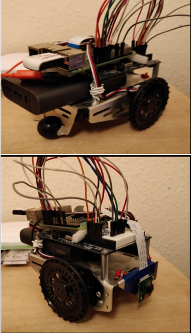
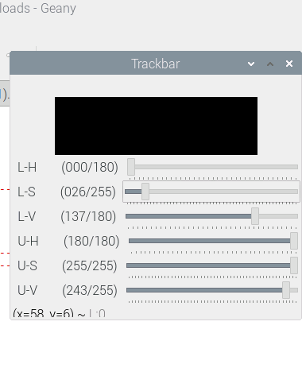
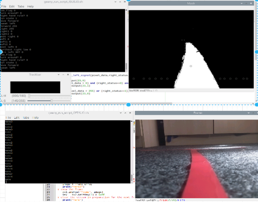

Maze Solver Robot(Machine Vision).
Project overview and inspiration.
This project was based on my final year dissertation project. The main goal of the project was to create a path finding robot its purpose being to navigate all sections of a maze. This was done through using elements of machine vision so that the robot can understand its environment and using the algorithm I designed, navigate its environment. The equipment used was a raspberry Pi model 3 b which carried out all the calculations and directed the robot while the paralax activit board acted as the bod of the robot. In which the parallax activity board receives signals from the raspberry pi which drove the motors connected to the parallax activity board.
How it works.
The robot works by obtaining images from its environment and transforming the image received into a binary image. Depending on the colour of the tape used, I created an interface in which the user can use sliders to make the robot detect the colour of the lane which the user has put.
Using various static points of interest I had put on the image, the robot uses these points of interest to correct itself if it strays off the lane. The type of algorithm used to navigate the maze is the right hand rule algorithm. Using this rule, the robot is guaranteeed to visit all sections of the maze and finding the exit of the maze as long as there are no closed loops within the maze and the exit is not at the centre of the maze.
How to install.
How to install and run the software can be found here